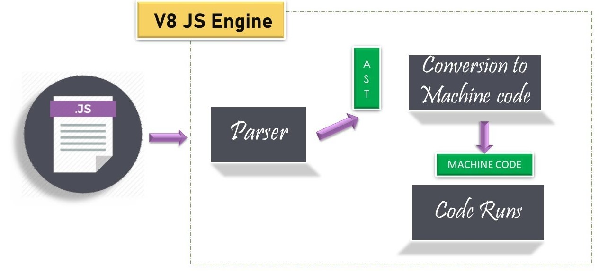

Local storage vs Session storage
| Local storage |
Session storage |
|
1.Local storage is Like RAM. When the Browser tab is closed, the
data is deleted.
|
1.Session storage is Like ROM. Data is stored permanently in the
browser. (for this website)
|
| 2.Data is only available for this tab. |
2.Data will be available in all tabs in the browser. (except new
incognito window)
|
|
3.Max capacity: 5MB per app per browser. This limit can be
increased by a user(Dependent on Browser)
|
3.Max capacity: Dependent on system memory. So the capacity is
Limited.
|
How does javascript work
The JS code runs on the browser's JS engine. Considering Google
Chrome, the engine name is Chrome V8.
javascript is interpreted language. The steps of JavaScript execution
are given below…
Step 1: Parser detects code errors. After verifying the full
code, Parser converts the code into an abstract syntax tree. (AST)
Step 2:AST defines the code traversing path. Machine code is
generated by following the path.
Step 3: Code Run (machine code).
